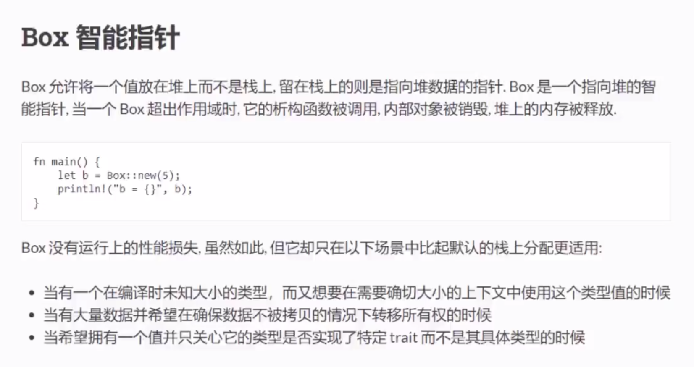
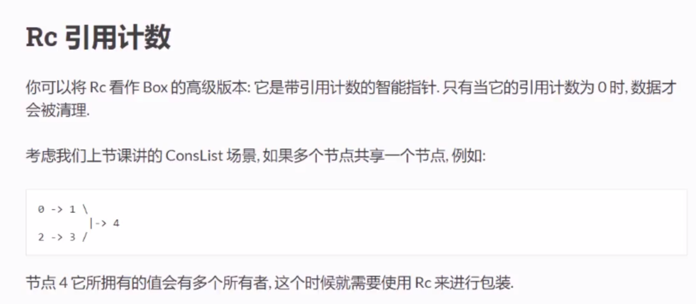
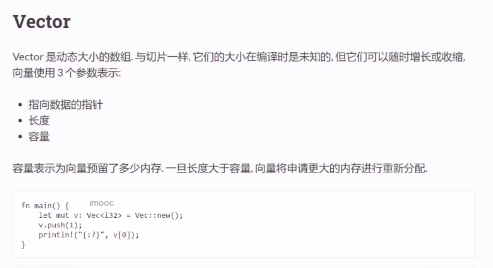
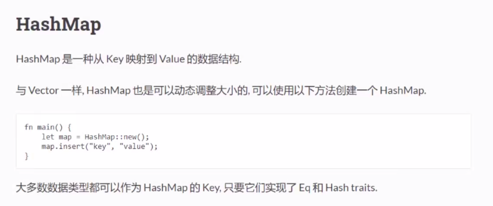
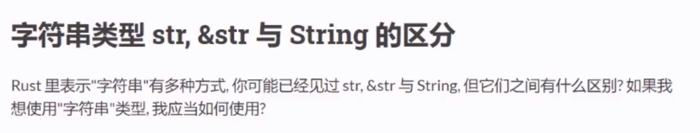
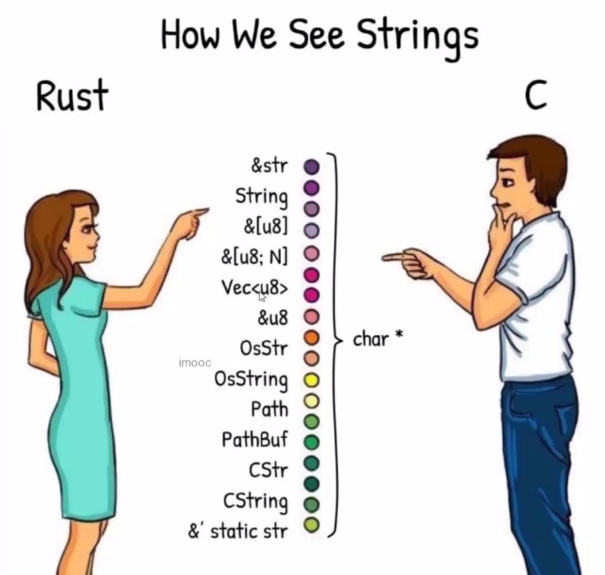
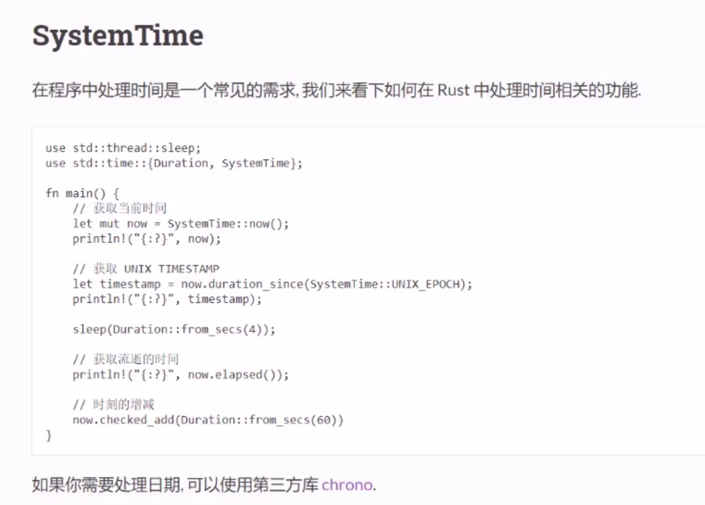

box智能指针

// 当有一个在编译时未知大小的类型，而又想要在需要确切大小的上下文中使用这个类型值 (递归)
// ConsLint 每一项包含两个元素：当前项和下一项,
// 结束项
// ConsLint(0,ConsLint(1,ConsLint(2,Nil)))
#[derive(Debug)]
enum List{
// 如果这里是list，则list里可能无限递归，大小无法确定
// 如果是智能指针，指针大小是确定的
Cons(i32,Box<List>),
Nil,
}
fn main() -> Result<(),Box<dyn std::error::Error>> {
let list = List::Cons(0,Box::new(List::Cons(1,Box::new(List::Cons(2,Box::new(List::Nil))))));
println!("{:?}", list);
// 当有大量数据并希望数据不被拷贝的情况下转移所有权
// let a = [0;1024*512]; // 该数组是存在栈上的
// let a_box = Box::new(a); // 放到堆上，此时发生了内存拷贝
let a_box = Box::new([0;1024*512]); // 一样是先放栈，再拷贝到堆
// 当希望拥有一个值并只关心它的类型是否实现了特定trait而不是具体类型(interface)
let f = std::fs::read("/tmp/not_exist")?;
Ok(())
}
Rc 引用计数

// 0 -> 1 > 4 < 3 <- 2
use std::rc::Rc;
enum List {
Cons(i32,Rc<List>),
Nil,
}
fn main() {
// 一个值多个所有者
let four = Rc::new(List::Cons(4,Rc::new(List::Nil)));
// clone就是所有者+1
// let zero_one = List::Cons(0,Rc::new(List::Cons(1,four.clone())));
let zero_one = List::Cons(0,Rc::new(List::Cons(1,Rc::clone(&four))));
let two_three = List::Cons(2,Rc::new(List::Cons(3,four)));
}
vector

fn main() {
let mut v:Vec<i32> = Vec::new();
for i in 0..10 {
v.push(i);
}
println!("{:?}", v[9]);
let mut v1:Vec<i32> = vec![0,1,2,3];
println!("{:?}", v1[2]);
// 弹出
println!("{:?}", v1.pop());
// 长度
println!("{:?}", v1.len());
// 容量 -> 预留的内存大小，会动态改变
println!("{:?}", v1.capacity());
for e in v1.iter() {
println!("{:?}",e);
}
for e in v1.iter_mut() {
*e *= 2; // 解引用,*2
}
for i in 0..v1.len() {
println!("v1[{:?}]={:?}",i,v1[i]);
}
}
hashmap

use std::collections::HashMap;
fn main() {
let mut transcript: HashMap<&str,u32> = HashMap::new();
transcript.insert("alice",95);
transcript.insert("bob",92);
transcript.insert("agwew",55);
match transcript.get(&"alice") {
Some(data)=>println!("alice {:?}", data),
None=>println!("alice not found"),
}
transcript.remove(&"alice");
match transcript.get(&"alice") {
Some(data)=>println!("alice {:?}", data),
None=>println!("alice not found"),
}
for (&name,&score) in transcript.iter(){
// hashmap是无序的
println!("{:?} {:?}", name,score);
}
}
字符串


- 作函数参数 -> &str
- 结构体成员 -> String
fn echo(s: &str){
println!("{:?}", s);
}
struct Foo {
// 如果是&str这种引用类型，需要指定生命周期，很麻烦，虽然性能好一点
name: String,
}
fn main() {
// hello world 直接保存在二进制文件，被保存在数据段的区域
// hello world 叫字符串的字面量
// str类型几乎不被用到，str代表的是在内存(数据段、代码段、...堆、栈)中的字符串数据
// &str可以引用内存中的内容
let s:&'static str = "hello world";
// String类型拥有自己的数据，可以修改,存在堆里
let mut t = String::from(s);
t.push_str("!!");
println!("{}", t);
// let foo = Foo{name:t.clone()};
let foo = Foo{name:String::from(s)};
println!("{:?}", foo.name);
echo(s);
echo(&t);
}
时间

use std::time::{SystemTime,Duration};
use std::thread::sleep;
fn main() {
// SystemTime是系统时间
// 通过系统调用请求操作系统返回的系统时间
let now = SystemTime::now();
println!("{:?}", now);
// 从1970年1月1日到现在的秒数(不同系统都是一样的)
let timestamp = now.duration_since(SystemTime::UNIX_EPOCH).unwrap();
println!("timestamp = {:?}", timestamp);
sleep(Duration::from_secs(4)); // 暂停4.2秒
// ela 航运领域的常见缩写 -> 表示经历了一段时间
println!("ela = {:?}",now.elapsed().unwrap());
let future = now.checked_add(Duration::from_secs(60));
println!("future = {:?}", future);
}